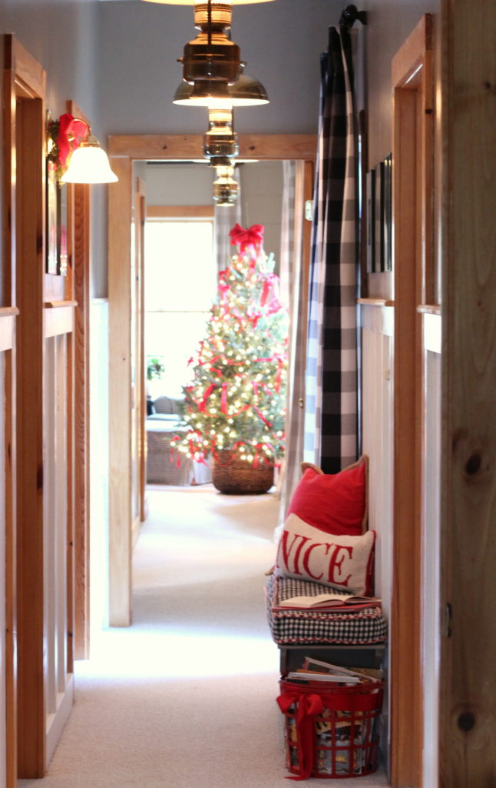

.png)
.PNG)
.PNG)
.PNG)
.PNG)
.PNG)
.JPG)
.JPG)
.PNG)
.PNG)


Merry Christmas dear friends! I hope you are enjoying this holiday season to its fullest. Like many of you, I absolutely LOVE Christmas, even if it does make my brain race with to-do list items from the moment my feet hit the floor in the morning to the moment my head hits the pillow late at night.

And if you are like me, you tell yourself, “Next year, I am starting early (or doing less) so that there is some downtime in this crazy busy time of year.” Right?
We were in Vermont last week staying in our favorite inn in Stowe. In each room there was a single vase with a small evergreen branch. That was all the Christmas decorating. Period. Nothing more. I loved it…the beautiful simplicity of it. And I remarked to my husband, “That’s how I am going to decorate next year.” He shook his head, looked at me like I had lost my mind and said, “Sure you are.”
It would be very hard to restrain myself to just that.

You know as well as my husband does that I kind of…um… go overboard during the Christmas season…just a little bit. 🙂 But I can’t help myself! This house just seems to be made for Christmas. All the cozy wood…the shiny brass…all the red. During December those of us that adore red find a way to put red ribbon on everything that doesn’t move! (Even the light fixtures. 🙂 )

And if there is space for a tree in a room, well you know I am going to find a way to put one there. I started out with an artificial one in the master bedroom, but it just didn’t look right to me. So I un-decorated it, moved it upstairs to my husband’s office, and bought a freshly cut live one to put in the bedroom…and then decorated it with red ribbon and bows. 🙂

And it’s not just the inside of this house that calls out for Christmas. We have pine and cedar trees all through the woods and 8 gigantic hollies in our yard that are covered with red berries, (and a bunch of other holly varieties too) so how can I possibly resist using all that fresh greenery in our Christmas decorating??


And when I go shopping, there are sooooo many beautiful holiday items in the stores. There doesn’t seem to be much red at other times of the year, but good grief you can find it in December!

My mother’s biggest shopping weakness is dishes, but pillows seem to be mine. I found that new lumbar one with the embroidered holly leaves and pinecones at TJMaxx. It had red patches that said Fa La La La La on it, but I snipped them off to simplify the design. (I thought the bed already had enough red on it. 🙂 )

With the shorter days, candles seem to make the rooms around here more cozy and add to the festive feel. 🙂


I tried out a little red rug in the bedroom just to see how a striped rug might look in there. I am thinking of buying a large one possibly in a black stripe soon. What do you think? Too much?

Here is the space again without it so you can compare.

Each year, I usually begin my Christmas decorating in the master bedroom, and that is where I started this year. When it was finished it was time to move on to…


the master bathroom with its red paneled antique cupboard.

And I just had to put some greenery on the cabinet by the bathtub.

in yet another red pot of course!

When the bathroom was finished, I moved on to the hall (that was at the top of the post.) After that it was on to the other bedrooms, and that is what will be in the next post for you to see. Gabbie and I will be waiting right here to see you then. 🙂 (This photo makes her look huge! She is heavy, but not that heavy.)

Until next time…


.PNG)
Your home is gorgeous and especially so at Christmas! I like you LOVE red and I use a lot at Christmas!!! I love the simple touches of fresh greenery and red ribbon!!!
Kelly, I love how you go overboard for Christmas! Come on, just a branch for decor? You’re kidding right? My how your little dog has grown. Just posted about two abused and rescued chihuahuas my daughter is fostering during the holidays.After little kids, dogs are next in line for Christmas love. Looking forward to the rest of your Christmas decorating.
It is always such a pleasure to open my email and find a post from you. Your house at Christmas always inspires me. And I say yes to the black striped rug. I love your trees. My four year old grandson helped decorate the tree in the living room and the tree is a little bottom heavy. I love to sit and look at it in the evening. Not changing a thing. Wishing you and yours the magic of a Merry Christmas!
Love the lumbar pillow!!! I’m going to check out TJMaxx and see if I get lucky and find one!! Merry Christmas!!!
I so love your posts! I was so excited to see you had posted a Christmas Tour Part 1, that just means I have more to look forward to. 🙂 Gabby is growing up and she’s a beautiful fur baby!
Merry Christmas to you and your family.
This was – and is ALWAYS – a treat! Your red ribbons are perfection. And your bedroom is perfection with no rug. IMHO
Your post was a lovely surprise! No to the red striped rug. I’m not a red person, — I like blues and purples, and now more greens in my holiday décor. I’m leaning toward the greens, but seems to be harder to find. I’ve been ready to cut some fresh spruce from our tree to fill a large vase….still waiting on my DH to do so. Pillows are fantastic additions – (I have to restrain myself from buying dishes/glassware in re-sale & antique shops).Your home is beautifully decorated as always. Can’t wait to see your porch, it’s always my favorite.
Beautiful & inspiring but please skip the rug:)
I absolutely agree…your home is perfectly suited to Christmas decorating…it all looks so festive! I think it’s the paned windows, along with the pine trim, and the wainscoting. My decorations are more muted this year…which suits my 70’s home better. But, I always get lots of ideas from you…so keep it up! 😉
Beautiful and festive as always! I’m right there with you “overdoing”it and thinking of ways to plan better, start earlier or simplify. 😀 I have made a lot of changes through the years though. I love all your fresh greenery. How fortunate to have your own supply!! I tend to “overdo” baking and candy making. I definitely have cut back this year!! 😉 It’s a woman thing. 😀
Your decorating always inspires me….. even the evergreen in a vase… I like that.
Merry Christmas my friend!
Merry Christmas, Kelly:
Your home is very welcoming at any time of the year. I love all the Christmas touches; its perfection. I noticed your basket of Christmas books; for over 25 years, I buy a Christmas book, for our home, and now for grand nieces/nephews.
I enjoyed your VT pictures; we are fortunate to live where we have all four seasons and am very happy that we are getting snow tomorrow and Christmas.
Looking forward to part two!
Kelly,
You always do the best decking of the halls! The red touches are wonderful and festive. I don’t really see you as a minimalist-Christmas-decor kind of person. 🙂
Merry Christmas to you and yours! Enjoy the season.
xo,
Karen
Beautifully decorated. Gabbie is all grownup looking now. She is one gorgeous girl.Merry Christmas to All!!🎄🎄🎄
From Tennessee
Kelly,
Your house was made for Christmas! I love the Christmas tree in the bedroom, the cupboard in the bathroom, and red ribbons everywhere. Ii also like the idea of a single evergreen in a vase . I will have to back to your Stow pictures and see that because I missed it. Sometimes less is more and I have some apts where a single vase with a sprig might just do the trick. I don’t know about the striped rug in there. I think the room is just great without it. Just my opinion though.
Merry Christmas!
DiAnne
Merry Christmas, Kelly! Your home is definatly made for this holiday. Fresh greenery is one of my favourite touches and a real tree is a must in our house.
Looking forward to part 2. Thank you!
I was so excited when I opened up my email tonight. What a great Christmas present to hear from you. I love what you’ve done this year for Christmas. I also love the color red and use it every chance I get. I started out to decorate very simply this year but ended with double or maybe triple the decorations I planned on using. Christmas sure has a way of making a person happy. Thank you for sharing. We all have missed you. I am really looking forward to your next post.
Such a wonderful Christmas surprise to find this delightful, cheering holiday tour among my emails! Everything looks so inviting and festive. Thanks for sharing your enthusiasm, inspirations, and fabulous style! What a treat!
Very excited to see your post today. I appreciate your style and talents. Thank you for the glimpse of your Christmas,
This post was like getting a surprise Christmas present! Your home is so warm and inviting it makes me happy to visit. I love your seasonal and holiday decor and can’t wait for Part II. Thanks so much for sharing. This was such a treat!!
Great to see your lovely home decked out in its Christmas finery. I love this time of the year. I think my house looks its best with the green and red additions. My table is set with my mom’s Apple pattern which lends itself to all those holiday colors. Lanterns with candles, vases filled with red and green, wreaths on the doors and widows- it’s all so lovely. Your vacation in Vermont makes me think …
I’m going to put a red vase with some cedar greenery in my guest room. It will be perfect , thanks for the idea.
Merry Christmas and happy holidays to you and your lovely family. Wishing you good health and great adventures in the new year! 🌲
Everything looks BEAUTIFUL! I sure envy you being able to just go outside for your fresh greens! Merry Christmas!
I’m a huge red lover too. —-And everything else about your home too!
Absolutely DARLING !!!!!!! No to the striped rug ! Too much ! The room looks PERFECT ! Great Job !
So good to have you back! I enjoyed your instagram feed from Stowe! I love all the efforts you put in to decorating for the holidays, but agree – your home is perfect for Christmas! Love the pillow you found too, and I like it the way it is – don’t need those letters. Good idea to take them off. Can’t wait to see what Gabbie has for us in part 2!
Merry Christmas Kelly! I needed your blog tonight because I haven’t been inspired to decorate. THANK YOU! I love the real tree in your bedroom with the red ribbons. Beautiful!!! And I envy your trip to Vermont. Did you watch “The Sound of Music” Sunday night? Take care. Love, Julia
Your house is beautiful and feels like the perfect Christmasy place to come home too! I’m inspired to add some greenery to my bathroom, it had thus far escaped lol!
Love your sweet Lab, she is gorgeous!
Oh goodness … so so pretty and yes I feel just like you …. I LOVE Christmas but it sure keeps my brain racing too! I have this cute little Christmas notepad that each night I write a daily to do list for the next day on!
You house looks lovely and I adore your real tree in your bedroom! All your fresh greenery looks great. I seem to always be trying to find fresh magnolia each Christmas. On Monday I was on the way to my granddaughter’s school for the class cookie decorating party and scored big time! I spied a huge pile of fresh magnolia branches waiting on the curb to be picked up by the city. I quick texted my husband who took his truck and gathered it all for me.
I really like your red rug but I think I like your room better without it.
As always you are my favorite blogger! Can’t wait for Part 2!
Merry Christmas Kelly!
I always love your home at Christmas. There is nothing like fresh greenery too. The holly bushes are a plus for sure this time of year. I have banned myself from buying anymore dishes, but I am on a pillow kick lately. Unfortunately, I discovered an online blog several years ago and she has a shop where she does a seasonal set. Not good, I tell you. I need to show some restraint. AS for the rug, I think I like it better without.
Beautiful as always, Kelly.
I love all the red! I collect Santas, so my house is overflowing with red too…can’t have too much! Everything looks so festive and just perfect in your home. Every year I think I won’t go overboard, but once I start opening the storage boxes full of my treasures (and the memories that come with them), I can’t stop myself. On the striped rug….it may compete with the buffalo check curtains, too many big geometrics in close proximity. The pop of color is great there though.
I always look forward to your Christmas posts and this one didn’t disappoint. As always, thank you for all of the love and effort you put into your blog. I know it’s hard work but it is deeply appreciated. Merry Christmas and every good wish to you and family for the coming year.
Kelly,
I was so happy to see your beautiful home in today’s post . Everything looks so merry and bright ! Even Gabbie was treated to a red bow ! Wishing you and your family a magical Christmas !
Oh, that Gabbie! All grown up and beautiful. I’m with your mom on dishes, but I’ve always been a fan of the way you store all of your fabulous pillows and other linens. That makes it so much easier to find things (I would think)! Merry Christmas to you and all those you love.
Your home looks beautiful & so inviting. I certainly believe more is more when it comes to Christmas decorations. It takes me a full week to get everything done but it’s definitely worth it!
Like you I’ll think next year I’m scaling back but when I see all my treasures waiting to be displayed I just can’t resist. It’s the most wonderful time of the year.
I love your real tree in the bedroom. I imagine the fragrance is divine!
Not sure about that red & white rug. Maybe black & white after Christmas. But everything is lovely.
May you & your family have a blessed Christmas.
Kelly, I have red throughout my house also. I never tire of it…even in my bedroom. I just so enjoy seeing all your touches that makes it so special. Wishing you a very Merry Christmas. Look forward to part two.
I had just thought about you this morning and how much I missed your blog, especially at Christmas. I love red as much as you do and there can never be enough. I’m with Jan about the single evergreen spray….it sounds lovely, but I need more. Thanks for sharing and I look forward to the next post.
I always look forward to seeing your home decorated for Christmas! You’re right, your house is made for Christmas with all the red and cozy touches. I do like the idea of the single evergreen in a vase..but I probably couldn’t restrain myself either! Great to hear you were in Stowe last weekend… We were close by in Killington last weekend! Nothing like Vermont this time of year! Thanks for the tour and Merry Christmas to you!
Shelley
Kelly,
It is always such a pleasure to see your home decorated for Christmas and I couldn’t agree more that you have the perfect home for it! I love the big red ribbon woven around your book basket. Gabby steals the show though. Thanks for sharing. Take care.
Dawn
I’m always excited when I get your email in December, knowing that your home will be a feast for my eyes. This year is no exception- it looks amazing! I love all of the red bows, trees and garland. Like your husband, I can’t imagine a vase with a single evergreen branch – no, you’re right, your house is made for Christmas! Wishing you and your family a wonderful Christmas!
Beautiful! Im thinking the single evergreen spray in a vase would be a good winter look, but Christmas? Never! Like you, I need red, red, red or it just doesnt look like Christmas. Hope yours is merry!